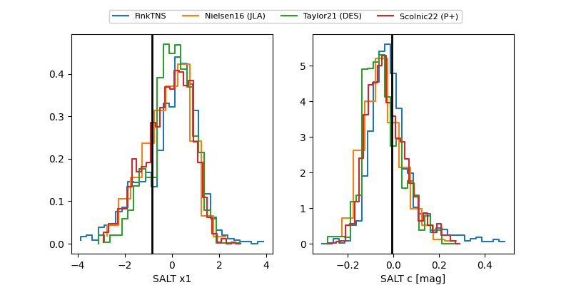

FINK: ZTF25abmhpuo
Lasair: ZTF25abmhpuo
ALeRCE: ZTF25abmhpuo
TNS: 2025wbw
YSE: 2025wbw
ZTF25abmhpuo (ztf,fink)
2025wbw (tns,yse)
ATLAS25kuy (atlas)
PS25hlw (panstarrs)
equatorial (ra, dec) = (242.4554,+15.60033)
galactic (l, b) = (29.3954,+42.70641)

last atlasc=17.68, atlaso=17.82, ztfg=17.58, ztfr=17.60
2 atlasc, 10 atlaso, 7 ztfg, 8 ztfr detections